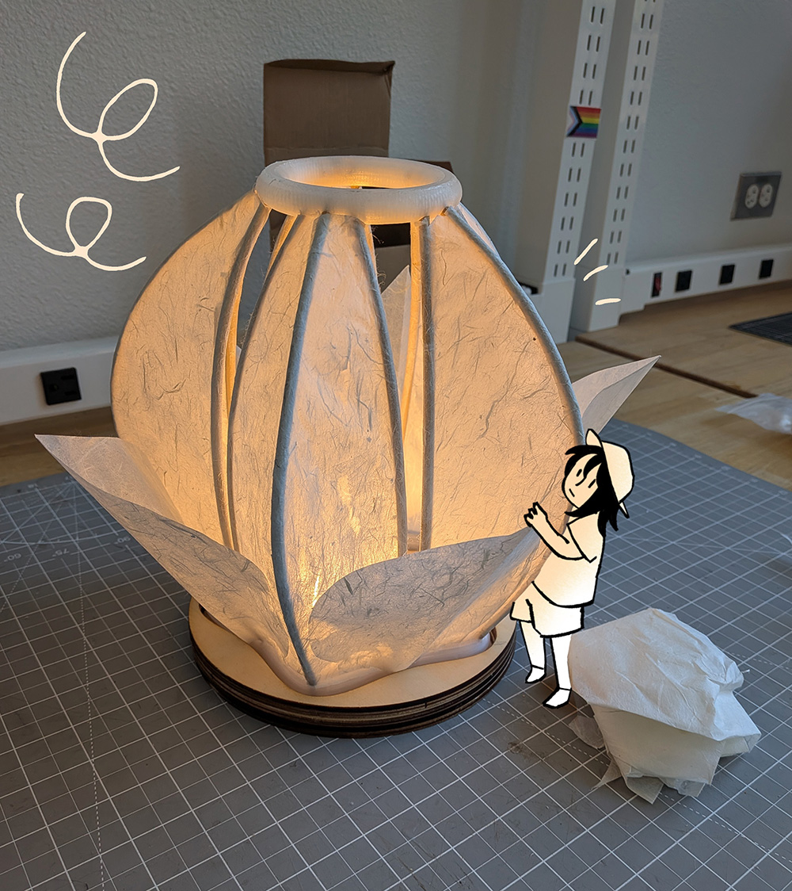

Great choice! Nothing better than being in the comfort of your own home. My idea of a cozy day in means being creative at my own pace. Sometimes I draw and other times I try out new crafts! Here's a lampshade I made in one of my classes.